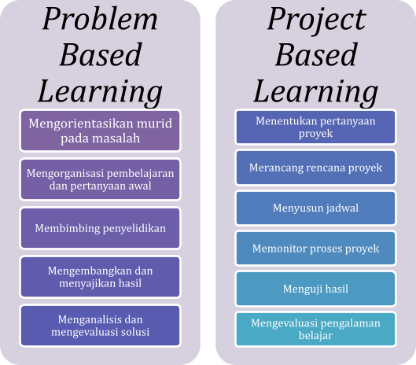
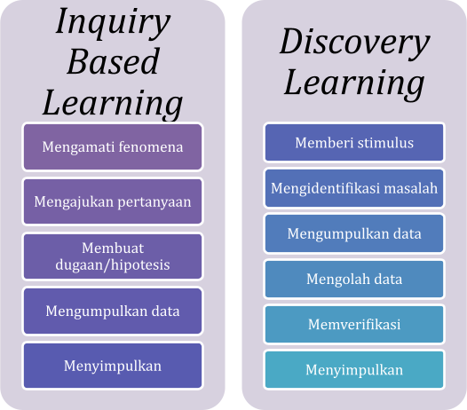

Kegiatan 1. Curah Pendapat
1. Curah Pendapat
Bapak/Ibu, mari kita mengingat kembali aktivitas yang telah dilakukan pada Kegiatan Belajar 1. Apa tujuan pembelajaran yang telah disusun di KB1?
Jika Bapak/Ibu masih ingat, sekarang coba jawab pertanyaan berikut dan tuliskan di forum diskusi.
| “Model pembelajaran apa yang dapat diterapkan dalam pembelajaran fisika yang berbantuan KA?” |
Melalui kegiatan belajar ini, Bapak/Ibu diharapkan mampu merancang alur kegiatan pembelajaran Fisika yang interaktif, memanfaatkan aplikasi KA, dan mendukung ketercapaian tujuan pembelajaran.
Kegiatan 2. Diskusi Kelompok (Perancangan Modul Ajar)
2. Diskusi Kelompok
Bapak/Ibu, di kegiatan ini kita akan mulai memperdalam pemahaman tentang bagaimana kecerdasan artifisial (KA) dapat diintegrasikan ke dalam berbagai model pembelajaran Biologi. Langkah pertama yang perlu Bapak/Ibu lakukan adalah mengamati sebuah infografis yang membandingkan empat model pembelajaran, yakni Problem Based Learning (PBL), Project Based Learning (PjBL), Inquiry Based Learning (IBL), dan Discovery Learning.
Silakan mencermati infografis tersebut di Gambar berikut.


Setelah memahami karakteristik utama keempat model tersebut, Bapak/Ibu akan berdiskusi untuk menggali bagaimana KA dapat membantu memperkuat setiap sintaks model. Anda akan menelaah contoh-contoh penggunaan KA dalam berbagai tahapan pembelajaran, sehingga dapat melihat lebih jelas titik integrasinya, baik dalam tahap eksplorasi, kolaborasi, penyelidikan, maupun pembuatan produk.
Selanjutnya, Bapak/Ibu akan bekerja dalam kelompok kecil berdasarkan fase kelas yang sama. Bersama kelompok, silakan mengamati contoh Modul Ajar Fisika yang sudah menerapkan dukungan KA. Dokumen tersebut dapat diakses pada Lampiran 1:
- Contoh Modul Ajar 1 mengenai Hukum I Termodinamika untuk murid kelas XI
- Contoh Modul Ajar 2 mengenai Efek Fotolistrik dan Teori Kuantum untuk murid kelas XII
Gunakanlah contoh-contoh tersebut sebagai rujukan awal untuk menyusun desain pembelajaran Anda sendiri. Setelah memahami strukturnya, Bapak/Ibu dan kelompok akan mulai menyusun Modul Ajar berbasis KA, menggunakan panduan yang tersedia dalam Lampiran 5.
Diskusi kelompok ini memberikan kesempatan kepada Bapak/Ibu untuk mengidentifikasi model pembelajaran yang paling tepat, menyusun urutan kegiatan belajar yang logis dan interaktif, sekaligus menentukan aplikasi KA yang dapat memperkuat pengalaman belajar murid.
Kegiatan 3. Presentasi dan Tugas Individu
3. Presentasi dan Tugas Individu
Pada sesi ini, setiap kelompok akan mempresentasikan rancangan pembelajaran yang telah disusun. Sampaikanlah alasan pemilihan model pembelajaran, alur kegiatan yang dirancang, dan bagaimana kecerdasan buatan mendukung setiap langkah pembelajaran. Setelah setiap kelompok menyampaikan hasil kerjanya, peserta lain memberikan tanggapan dan masukan yang membangun untuk penyempurnaan desain pembelajaran tersebut.
Sebagai tindak lanjut, Bapak/Ibu akan mengerjakan tugas individual. Silakan memilih salah satu materi Fisika sesuai fase atau kelas yang Anda ampu, kemudian menyusun Modul Ajar Fisika berbantuan KA dengan menggunakan salah satu model pembelajaran yang paling relevan. Modul Ajar tersebut selanjutnya diunggah melalui Tautan Aktivitas KB2.